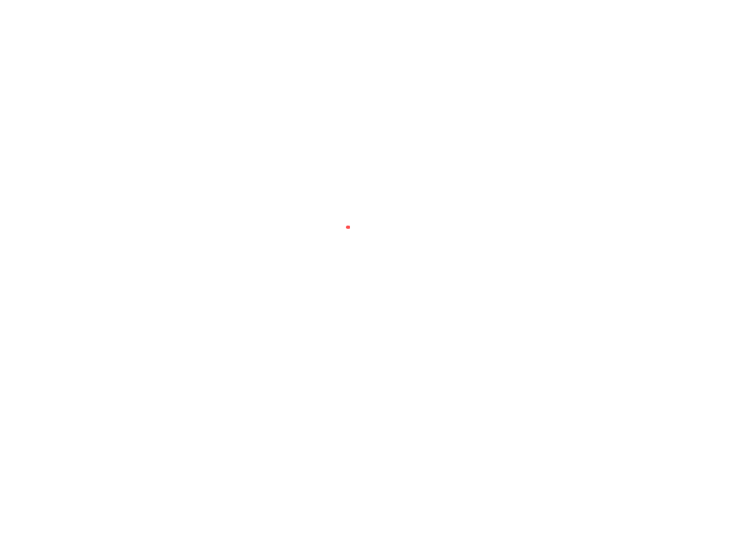

ИГРАЙ С FIX
Новое поколение лаунчера для Minecraft. Максимальная производительность, удобный интерфейс и мгновенная установка модов.


Новое поколение лаунчера для Minecraft. Максимальная производительность, удобный интерфейс и мгновенная установка модов.